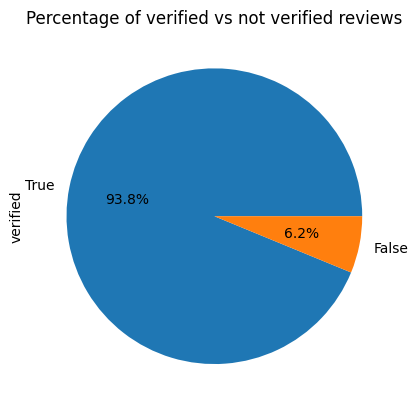
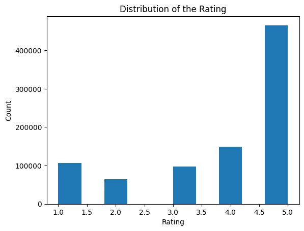

Predicting Amazon Customer Reviews Ratings with Naive Bayes
In this blog post, we explore a fascinating use case of text classification, where we use a Naive Bayes classifier to predict the rating of an Amazon review based on its text. Text classification is one of the most common applications of Natural Language Processing, and here we apply it to a dataset of customer reviews for different products on Amazon.
Introduction
Our dataset contains customer reviews for a myriad of products available on Amazon. Each review comes with a rating that ranges from 1 to 5. The ultimate goal of this project is to create a Naive Bayes classifier that accurately predicts the rating of a review just from its text content.
The concept behind the Naive Bayes classifier is relatively straightforward. It starts by analysing the training data, which includes both reviews and their associated ratings. The classifier calculates the prior probability of each rating appearing in the dataset, and the likelihood of each word in the reviews showing up for a specific rating. This model then uses this derived information to predict the rating of unseen reviews.
Data & Code
The main components of this project include a dataset and a Jupyter Notebook:
AMAZON_FASHION.json.gz: A dataset that contains Amazon customer reviews.naive_bayes_classifier.ipynb: A Jupyter Notebook file that includes the entire codebase for the project.
Approach
Implementing this project involves a series of carefully executed steps:
- Setting Up: The first step in this project is to import the necessary Python libraries. These include pandas for data handling, gzip for working with the gzipped dataset file, sklearn for machine learning, and matplotlib for visualizations. We also import libraries such as numpy.
- Loading the Dataset: Our dataset is stored in a gzip-compressed JSON file, and we use the pandas read_json function to load this data into a DataFrame, which provides a convenient structure for data manipulation and analysis. We then select the columns we are interested in, i.e., the overall rating, whether the review is verified, the review time, and the review text.
- Preprocessing the Data: Before we can feed the data into a machine learning model, we need to preprocess it. This involves cleaning the data and transforming it into a format that the machine learning model can understand. After loading the data, we check for and handle any missing values. We also convert the reviewTime column into a datetime format, which can be more easily manipulated for analysis.
- Exploratory Data Analysis (EDA): In this step, we analyze the data to understand its characteristics. We plot a histogram of the distribution of ratings and a bar plot and a pie chart to see the proportion of verified reviews. We see that majority of the reviews are verified, hence we decide to drop the unverified reviews as they make up only a small proportion of the total data.  
- Feature Extraction: To transform the review text into a format that can be fed into the Naive Bayes model, we use the CountVectorizer class from sklearn. This class converts a collection of text documents to a matrix of token counts, essentially creating a bag-of-words representation of our text data.
- Choosing a Model: We chose the Multinomial Naive Bayes model for this project. Naive Bayes is a classification algorithm for binary and multi-class classification problems. It is based on the Bayes theorem, and it assumes that the presence of a particular feature in a class is unrelated to the presence of any other feature. This works well with text data where this assumption often holds true.
- Training the Model: We train our Naive Bayes classifier on our training data. The fit method is called with the training data and the corresponding labels.
- Evaluating the Model: After training the model, we use it to make predictions on our test data. We then compare these predictions with the true labels to evaluate the performance of the model. We calculate accuracy, precision, recall, and F1 score to get a comprehensive understanding of our model's performance. We also plot a ROC curve for each class to visualize the performance of our model. The ROC curve is a plot of the true positive rate against the false positive rate. The area under the curve (AUC) gives us a measure of the model's ability to distinguish between different classes.
- Conclusion: By leveraging the power of the Multinomial Naive Bayes model, we are able to predict Amazon review ratings with high accuracy. This can be a useful tool for businesses to automatically analyze and understand customer sentiment from their reviews.
| Accuracy | Precision | Recall | F1 Score |
|---|---|---|---|
| 0.661197 | 0.62844 | 0.661197 | 0.63773 |
How to Replicate This Project
Interested in running this project on your own machine? It's simple. First, clone the repository containing the project. Then, open and run the Jupyter Notebook naive_bayes_classifier.ipynb.
Potential Improvements
This project has room for future enhancements. Some of the areas we could explore include tuning the parameters of the Naive Bayes classifier or experimenting with different types of classifiers to compare their performance. These improvements can potentially increase the accuracy of the model's predictions.
About the Author
This project was developed by Mina Mehdinia, a passionate Data Scientist who enjoys exploring new ways to leverage machine learning techniques for real-world applications.